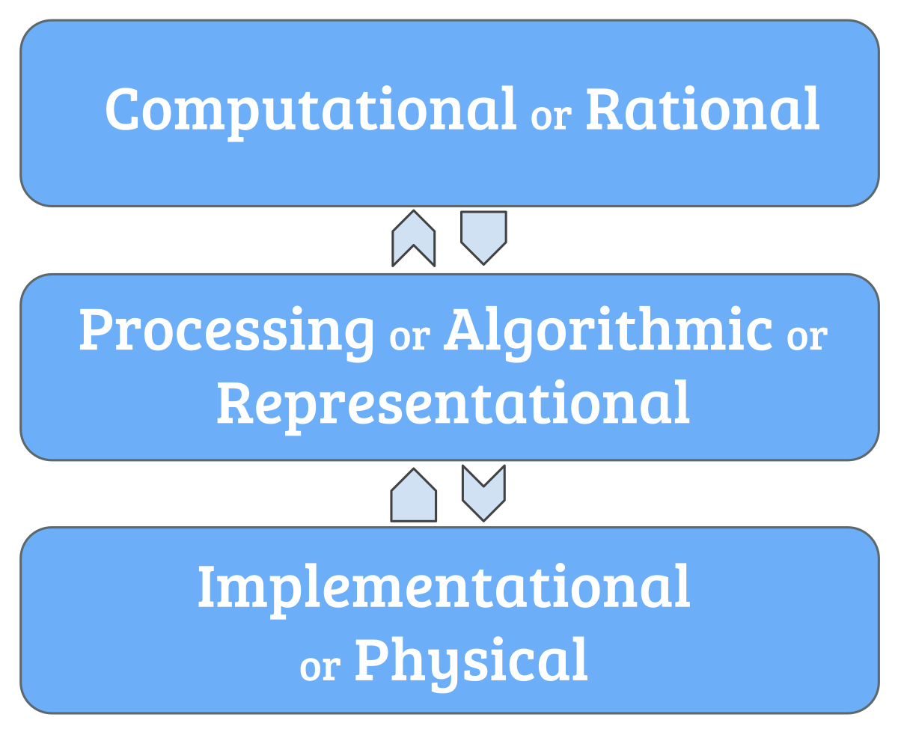
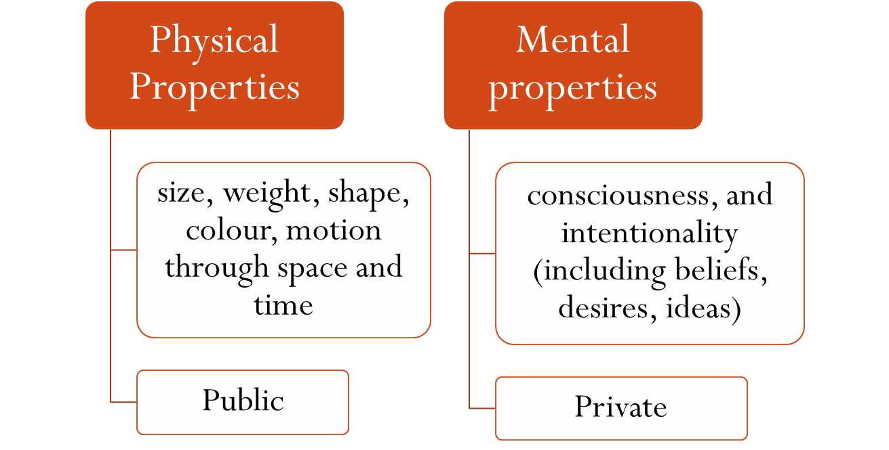

Machine learning has been quite the buzz recently, from wielding the power of big data to optimize delivery routes, serve the best ads, or analyze medical imagery, to the ability to beat the best humans at chess, generate lifelike images based on text prompts, and even write code. With such recent innovations, there is even buzz of artificial intelligence taking over the jobs of artists and writers, things universally regarded as very human activities. And though I personally am quite skeptical of such a future, machine learning does draw inspiration from humans and the human mind. But it’s a little more complicated than that.
Engineers often take inspiration from nature when first designing the
things they build. For instance, many of our first attempts, or
imaginations at flight began with feathered wings, like the birds we see
in the sky.
Jacob Peter Gowy's The Flight of Icarus
Similarly, we draw inspiration from none other than ourselves to build a machine that can learn. Again, it’s not so simple though.
Let’s go back to the birds. Obviously, we can fly now. But we don’t do it with feathers. That would be ridiculous.
Generated by DALL-E mini by craiyon.com
We do use wings though! But the basic idea is that we don’t need to perfectly replicate what we see in nature to accomplish our goals, and in fact an exact replica would probably never work in most cases. That’s because our tools of implementation are different.
Wikimedia commons
David Marr was a neuroscientist largely concerned with visual processing. He laid out three levels of analysis to understand vision, which can be extended to much more (like understanding the mind!). There is the computational level, concerned with what a system does, what it accomplishes and why. Then there’s the algorithmic level, concerned with the how, what processes it goes through. Finally there’s the implementation level, or the physical level. This is the physical realization of the computational and algorithmic levels. And it is probably the least important level to emulate when we build things inspired by nature (unless you are focused on it for some other purposes, like art, which is lovely). That’s because the physical implementations of things are so different and so unique, that it would be silly to limit ourselves to it. Again, feathers.
Generated by DALL-E mini by craiyon.com
But if we can thoroughly understand the computational and algorithmic levels, we can apply those to any implementation we see fit.
When it comes to the brain, we’ve become pretty familiar with it on the physical level. Indeed, we’ve come a long way from 335 BC, when Aristotle thought the brain was a radiator keeping our hearts from overheating. Now we have an understanding of neurons, synapses, even the electric signaling processes of the brain. We can apply our knowledge of the brain’s architecture, memory, modularity and attention to machine learning, as we have for neural networks.
How wonderful would it be if we could know more on the computational and algorithmic levels? While we can examine and measure the physical, mental properties– consciousness, intentionality, the thoughts behind the curtain– are private information, a black box.
From Ronak Jain
The quest to understand the mind has plagued us for centuries, millenia. While we could make strides in machine learning thanks to our ability to analyze the brain (the physical), and even some computational and algorithmic understanding, there is so much more to it. To those who worry of AI making artists obsolete: as cliched as it sounds, AI will not replace you, because it is missing the elements, the essence that make us human. DALL-E, Stable Diffusion, GPT-3, and other machine learning models certainly are impressive and can produce incredible results. But do they have the same private elements of the human mind that have brought our species so far in the world?
Can they?